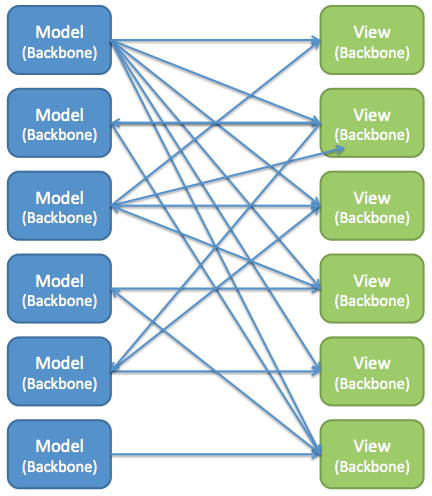

React.js and Flux architecture
class: center, middle .title[ Front-end training # React.js and Flux architecture ] --- # React.js  React.js was released by Facebook. It has a few key ideas: - virtual DOM - component framework - JavaScript syntax extension (JSX) Benefits: - fast rendering - simple API - no direct DOM manipulation --- # Bootstrapping React components are widgets that can render themselves and react to user input. React is bootstraped by rendering root React component into DOM. Method signature: ```javascript ReactComponent render( ReactElement element, DOMElement container, [function callback] ) ``` Method usage: ```javascript React.render(<YourRootComponent />, document.getElementById('id1'); ``` It's possible to have multiple root nodes. --- # Component structure React component API is the most complicated part of React.js. This is smallest React component: - using JSX ```javascript var YourRootComponent = React.createClass( render: function() { return <div>Hello world {date={new Date()}}</div> }) ``` - without JSX ```javascript var YourRootComponent = React.createClass( render: function() { return React.createElement('li', null, "Hello world" + {date={new Date()}) }) ``` Render method's return value is transformed into virtual and real DOM --- # Component structure in depth ```javascript var YourRootComponent = React.createClass( // Component-specific state getInitialState // initial components state getDefaultProps // default props values propTypes // Strict typed components! mixins // Extend component with other components // Lifecycle methods componentWillMount componentDidMount // Opportunity for component's DOM manipulation componentWillReceiveProps // Opportunity to set component's state shouldComponentUpdate // Opportunity to prevent rendering componentWillUpdate componentDidUpdate componentWillUnmount // Opportunity to unregister event listeners render: function() { return <div>Hello world {date={new Date()}</div> } }) ``` --- # React.js data flow In React.js data is passed from parent components to children using props. Child components call parents, using passed callbacks. ```javascript var ItemsList = React.createClass( getInitialState: function() { return {items: ["item1", "item2", "item3"] }, _handleItemRemove: function(clickedItem) { var filteredItems = this.state.items.filter( function(item) {return item !== clickedItem} ) this.setState({items: filteredItems}); } render: function() { return <Item onRemove={this._handleItemRemove} items={this.state.items} /> }) } ``` Imagination time! Imagine React application as a tree of components. Some components have state, and some pass state to their children. --- # How virtual DOM works Every setState triggers newVirtualDOM - existingVirtualDOM comparison and re-renders the whole sub-tree, applying minimal updates to DOM. <img width='320px' style='float: right' src='assets/img/virtual-dom.png' /> Ways to improve performance: - call setState as low as possible - use shouldComponentUpdate to prevent re-rendering of large sub-tree - compare only State component receives with immutable values and PureRenderMixin. Preventing re-rendering: <img width='320px' style='float: right' src='assets/img/virtual-dom-optimisation.png' /> --- # Features I like most. #1 - Ease of composability ```javascript ... render: function() { return ( <BaseModal closeBtn={true} onClose={this.props.onClose} isOpen={this.props.isOpen} > <form> <div className='input-pair'> <div className='input-pair__title-box'> NAME </div> <div className='input-pair__input-box'> <MacSelect name='country' options={[{value: 'Ukraine', label: 'Ukraine'}, ...]} value={this.state.storedParams.country} onChange={this._onInputChange} /> </div> </div> ... ``` --- # Features I like most. #2 - No templating language React Component instances are manipulated using plain old JavaScript ```javascript ... render: function() { return ( <div className='assets-grid'> <div className='assets-grid__items'> {this.state.assets.map(function(asset, index) { return <AssetGridItem key={index} asset={asset} /> })} </div> </div> ); } ... var obj = { a: <div>hello</div>, b: <ListItem /> }; var listItem = predicate ? <ListItemA /> : <ListItemB /> ``` --- # Features I like most. #3 - PropTypes PropTypes provide strict typing for component's parameters ```javascript var YourRootComponent = React.createClass( ... propTypes: function() { return { size: React.PropTypes.number, position: React.PropTypes.string.isRequired, React.PropTypes.oneOf(['News', 'Photos']), React.PropTypes.instanceOf(Message) } } ... ) ``` Now YourRootComponent will throw Console warning if initialized without required props or with props of wrong type. PropTypes also act as a component documentation. --- # Features I like most. #4 - Lifecycle events // TODO: write about Event unregistering in componentWillUnmount to avoid memory leaks, preventing Render in componentWillReceiveProps optimization etc. --- # Flux architecture. React components provide fine way to compose UI widgets and pass data down Component tree. But if you app grows, same data may be needed in multiple subtrees of your Component tree. Flux architecture gives you a way to share data between many UI components, with minimal coupling and simple unidirectional data-flow. Flux building blocks: React Components, Action Creators, Dispatcher, Stores.  --- # Flux architecture. Components Components are decoupled from Stores. - to read from Store they use 'change' event. - to write to Store they use Action Creators. ```javascript var AssetsList = React.createClass( componentDidMount: function() { assetsStore.on('change', function() { this.setState({selectedAssets: assetsStore.getState().selectedAssets}) // read }) } _handleLike: function() { actionCreators.likeAssets(this.state.selectedAssets); // write } render: function() { return <button onSubmit={this._handleLike}> Number of selected {this.state.assets.length} </button> /> }) } ``` --- # Flux architecture. Action Creators Action Creators represent Application Service Layer from DDD. It contains all tasks the system can perform and is an application's boundary for the Stores from the perspective of interacting clients (mostly Components). Typical Action Creators methods: ```javascript likeAssets, loadMoreSearchResults, selectAuthor, likeAssets, fetchAllItems ``` Action creators can make AJAX requests. They always trigger Dispatcher events (Actions), to which Stores are subscribed. ```javascript module.exports = { sortAssets: function(assets) { dispatcher.dispatch( constants.SORT_ASSETS, assets // trigger Dispatcher event (Action) ); }, likeAssets: function(assets) { dispatcher.dispatch(constants.LIKE_ASSETS_PROGRESS); assetsDao.like(assets).then(function() { // AJAX request dispatcher.dispatch(constants.LIKE_ASSETS_SUCCESS, assets); }); }, ``` --- # Flux architecture. Dispatcher The dispatcher is a singleton, and operates as the central hub of data flow in a Flux application. It is a registry of callbacks, and can invoke these callbacks in order. Benefits of passing all Model-mutating events through central Event hub: - Ease of debugging - Synchronization of callbacks, what listen to same event In Action Creator ```javascript sortAssets: function(assets) { dispatcher.dispatch(constants.SORT_ASSETS, assets); } ``` In Store ```javascript ... this.bindActions( SORT_ASSETS, this.handleSort // Bind to Dispatcher event ... ``` --- # Flux architecture. Stores. Store is a wrapper for your Model which gives separate write and read interfaces. - write interface corresponds to actions your system invokes on Model; - Read interface corresponds to data UI needs from Model.  --- # Example of Store ```javascript module.exports = Fluxxor.createStore({ initialize: function () { this.assets = []; this.likedAssets = []; // Write interface this.bindActions( // Subscribe to Dispatcher events (Actions) constants.GET_ASSETS_SUCCESS, this.getAssetsSuccess, constants.LIKE_ASSETS_SUCCESS, this.likeAssetsSuccess ); }, getAssetsSuccess: function(assets) { this.assets = assets; emit('change'); }, likeAssetsSuccess: function(assets) {...}, // update this.likedAssets & emit('change') // Read interface getState: function () { return { assets: this.assets, likedAssets: this.likedAssets, selectedAssets: this.selectedAssets }; } }); ``` --- # Features I like most. #1 Unidirectional data-flow. // TODO: Say how it makes understanding/debugging code easier  <img src='./assets/img/flux.png' width='540px' /> --- # Features I like most. #2 Read/write interfaces for Stores. // TODO: Show some benefits of this aspect of unidirectional data-flow (for example how it reduces coupling) --- # Flux overview Flux architecture was inspired by CQRS and Domain Driven Design. Some links to read more: - http://jaysoo.ca/2015/02/06/what-the-flux/ - http://codebetter.com/gregyoung/2010/02/16/cqrs-task-based-uis-event-sourcing-agh/ ---